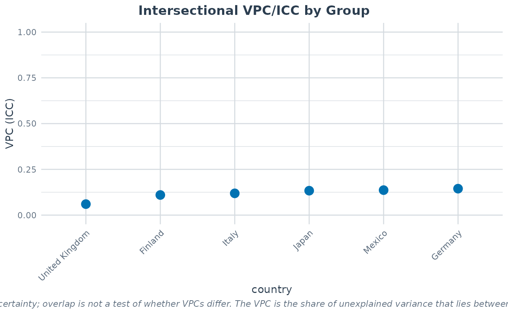

Cross-National Educational Achievement Data for MAIHDA
Source:R/maihda_country_data.R
maihda_country_data.RdA cross-national dataset for demonstrating how Multilevel Analysis of
Individual Heterogeneity and Discriminatory Accuracy (MAIHDA) can be used to
compare intersectional inequality across a higher-level grouping
variable (here, country) with compare_maihda_groups and
maihda. Each row is a 15-year-old student; the intersectional
strata are formed by gender and socioeconomic status (ses), and
the outcome is the PISA mathematics score.
Format
A data frame with 3,600 rows (600 students in each of 6 countries) and 7 variables:
- country
Factor; one of Finland, Germany, United Kingdom, Italy, Japan, Mexico. The higher-level grouping variable.
- gender
Factor; student gender (female/male). A stratum dimension.
- ses
Factor; socioeconomic status as global tertiles (Low/Medium/High) of
escs, computed on the pooled sample so a band means the same in every country. A stratum dimension.- escs
Numeric; the PISA index of economic, social and cultural status (the continuous measure underlying
ses).- math
Numeric; PISA mathematics score (first plausible value). The primary outcome.
- reading
Numeric; PISA reading score (first plausible value).
- low_math
Factor; "Yes" if
mathis below 420 (PISA proficiency Level 2 baseline), else "No". A binary outcome for logistic examples.
Source
Derived from the OECD Programme for International Student Assessment (PISA)
2018 student questionnaire data (OECD (2019), PISA 2018 Database),
accessed and cleaned via the learningtower R package (MIT licensed),
https://CRAN.R-project.org/package=learningtower. A balanced random
subsample of 600 complete-case students per country was taken (seed 2026). The
data preparation script is in data-raw/maihda_country_data.R.
Details
Intersectional inequality (the between-stratum share of variance, VPC/ICC) in mathematics achievement differs across the six countries, which is what makes the dataset a useful showcase for the group-comparison workflow.
The intersectional strata are gender:ses (2 x 3 = 6 strata). A canonical
MAIHDA "null" model is math ~ 1 + (1 | gender:ses); comparing its VPC
across countries quantifies how much joint gender-by-class inequality in
achievement varies between countries.
Note
This is a teaching/illustration dataset only. It uses a single PISA plausible
value for each score and does not carry the PISA survey weights or
complex sampling design, so results are not survey-representative and
should not be used for substantive cross-national inference. (For your own
survey data, the package supports design-weighted MAIHDA via the
sampling_weights argument of fit_maihda /
maihda.)
Examples
# \donttest{
data(maihda_country_data)
# Compare intersectional (gender x SES) inequality across countries
analysis <- maihda(
math ~ 1 + (1 | gender:ses),
data = maihda_country_data,
group = "country"
)
#> boundary (singular) fit: see help('isSingular')
#> maihda(): added the additive main effect(s) of the stratum dimension(s) gender, ses to the adjusted model; the null model excludes them. List them in the formula to specify the adjusted model explicitly.
#> boundary (singular) fit: see help('isSingular')
#> boundary (singular) fit: see help('isSingular')
#> boundary (singular) fit: see help('isSingular')
#> boundary (singular) fit: see help('isSingular')
#> boundary (singular) fit: see help('isSingular')
analysis
#> MAIHDA Analysis
#> ===============
#>
#> Null formula: math ~ (1 | stratum)
#> Adjusted formula:math ~ (1 | stratum) + gender + ses
#> Engine: lme4 | Family: gaussian
#> VPC/ICC (null): 0.1493
#> PCV (null -> adjusted): 1.0000
#> Between-stratum variance: 1124.7631 (null) -> 0.0000 (adjusted)
#> ~100.0% of the between-stratum variance is additive (the dimensions' main
#> effects); the remainder is the between-stratum variance remaining after the
#> additive main effects -- a model-dependent quantity
#> Strata: 6
#> Intersectional interactions: 0 of 6 strata flagged (95% interval, BH-adjusted)
#>
#> Group comparison by 'country':
#> MAIHDA Group Comparison
#> =======================
#>
#> Group variable: country
#> Engine: lme4 | Family: gaussian | Strata: shared/global
#>
#> group n n_strata vpc var_between var_other var_residual pcv
#> Finland 600 6 0.10994 785.8 0 6361 1
#> Germany 600 6 0.14448 1271.6 0 7529 1
#> Italy 600 6 0.11890 1065.3 0 7895 1
#> Japan 600 6 0.13344 1032.3 0 6704 1
#> Mexico 600 6 0.13649 771.5 0 4881 1
#> United Kingdom 600 6 0.06011 470.5 0 7357 1
#> var_between_adjusted var_between_adjusted_ml status
#> 0.000e+00 0.000e+00 ok
#> 0.000e+00 0.000e+00 ok
#> 0.000e+00 0.000e+00 ok
#> 3.782e-12 3.022e-12 ok
#> 0.000e+00 0.000e+00 ok
#> 0.000e+00 0.000e+00 ok
#>
#> Use summary() for variance components and plot(type = ...) for figures.
#>
plot(analysis, type = "group_vpc")

# }